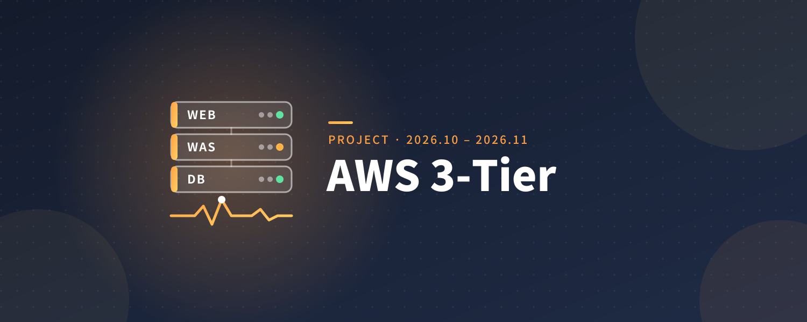
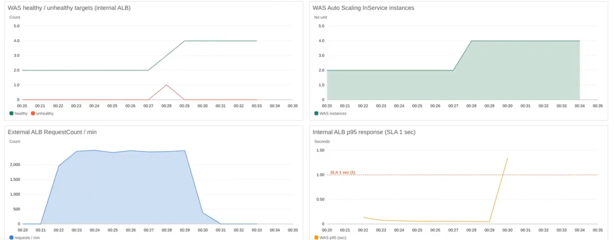
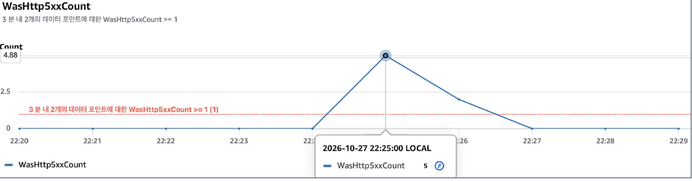
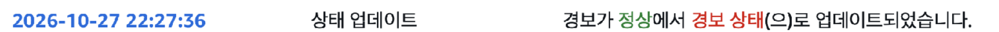

AWS 3-Tier 서비스 모니터링·운영
2026.10 – 2026.11 · 베스핀글로벌 멀티클라우드 과정 팀 프로젝트

프로젝트 간단 설명
베스핀글로벌 멀티클라우드 과정의 팀 프로젝트입니다. 접수 시스템을 외부 ALB → Apache WEB → 내부 ALB → FastAPI WAS → RDS MySQL로 이어지는 AWS 3-Tier 구조로 구성했고, 저는 모니터링과 운영 기록을 맡아 CloudWatch 지표와 부하 로그를 분석했습니다.
주 시도들
- 요청 흐름에 맞춰 CloudWatch 대시보드(29개 위젯)에 대상 상태 → 요청량·오류 → 응답시간 → 서버·DB 자원 순서로 지표를 배치했습니다.
- WEB·WAS 비정상 대상, 외부 ALB 5xx, WAS 로그 5xx, 내부 ALB Target 5xx, DB 크레딧·CPU 사용량을 감시하는 운영 경보 9개를 구성하고 ALARM·OK 알림을 SNS 이메일로 연결했습니다.
- 부하·장애 시험에서 발생한 오류를 CloudWatch 로드밸런서 지표, Apache 접근 로그, 애플리케이션 서버 중지·재시작 기록과 같은 시간대로 대조해 조사 범위를 좁혔습니다.
기술 및 리소스
- AWS EC2, ALB(외부·내부), RDS MySQL
- CloudWatch 대시보드·경보·로그, SNS
- Apache, FastAPI, Linux
담당 역할
- 모니터링·운영 기록 담당
- CloudWatch 대시보드·경보 구성, 알림 연결 검증
- 부하·장애 시험 결과의 지표·로그 분석, 모니터링 파트 발표 원고·결과보고서 작성
성과
- 120명 부하에서 16.4 RPS·p95 35ms, 200명에서 27.4 RPS·p95 42ms로 팀 합격 기준(p95 1초 이하, 5xx 1% 미만)을 충족한 것을 확인했습니다.
- 1,200명부터 502가 나타나고 2,000명에서 p95 1.2초·전체 요청 실패율 2.5%로 포화되는 구간을 지표로 확인했습니다.
- WAS 한 대의 DB 연결을 4분간 차단한 장애 시험에서 앱 로그 5xx 경보는 2분 36초, 내부 ALB Target 5xx 경보는 4분 7초 뒤에 발동한 것을 기록했습니다.
- 120명·2시간 내구 시험에서 117,270건 중 실패 34건, p95 36ms를 기록했습니다.
트러블슈팅
- 외부 Target 5xx 경보의 OK 알림 작업이 비어 있던 것을 발견해 ALARM·OK를 모두 운영 SNS에 연결했습니다.
- 기존 WAS 5xx 경보가 로그에서 만든 사용자 정의 지표라는 점을 확인하고, 내부 ALB Target 5xx 경보를 별도로 추가해 관측 범위를 보완했습니다.
- DB 연결이 끊긴 WAS가 /health 200을 유지해 ALB에서 자동 제외되지 않는 것을 확인했습니다. 경보가 오류를 발견하는 것과 상태 검사로 서버를 제외하는 것은 다른 동작이라는 점을 정리했습니다.
- 로그마다 기록 시간대가 달라 한국 시간으로 맞춘 뒤 비교했고, 오류가 집중된 일부 구간과 애플리케이션 서비스 재시작 시각이 겹치는 것을 확인했습니다.
검증과 개선 방향
- 상태 검사가 DB 연결 같은 업무 의존성을 반영하도록 개선한 뒤 재시험이 필요합니다.
- 경보 임계값(외부 5xx 분당 5건, WAS 로그 1건, 내부 ALB Target 5xx 10건)은 초기 고객 기준이며, 실제 요청량과 알림 중복을 보고 다시 검토해야 합니다.
- WAS 자동 확장 기준 변경 후의 증설 재측정은 후속 과제로 남겼습니다.
대시보드 및 경보 화면


